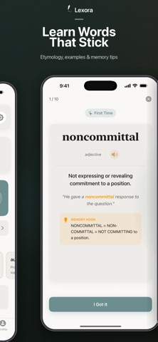

3,400+ SAT Words
Starter, Core, Master, and Expert decks curated for SAT.
Keep meeting words you almost know? Learn their meanings, hear them aloud, and practice the ones that trip you up. Build your English vocabulary with 3,400+ SAT words and spaced repetition.
SAT Verbal • Daily Coach

Starter, Core, Master, and Expert decks curated for SAT.
New and due words, scheduled with FSRS by default. SM-2 and HLR are also available.
Review studied words, target weak words, preview new words, or take a five-word quiz.
FSRS schedules reviews automatically. Difficult words return more often, while new words arrive gradually.
Type an answer, fill in the blank, or choose from multiple choice. Hints and typo detection help when you get stuck.
Track a daily streak, use a one-day freeze when you miss a day, and earn badges as you practice.
Etymology and mnemonic fields help you build hooks instead of memorizing in isolation.
Know what you want to say but not the word? Search by meaning, then listen to its pronunciation.
Start without an email address or password. Your learning progress stays on your device.
Start with a few words. Learn their meanings, try them in a sentence, and let your review schedule bring them back.
Lexora is an iPhone and iPad app for SAT vocabulary practice. It combines 3,400+ curated words, spaced repetition, meaning search, pronunciation, and short practice sessions.
Yes. Its words are curated for SAT study, and you can use the definitions, examples, pronunciation and spaced repetition for everyday word practice too. Focus on unfamiliar words or return to the ones you find difficult.
Lexora offers word meanings, examples, pronunciation and scheduled review. Its current word packs are curated for the SAT. For GRE preparation, pair vocabulary practice with GRE reading comprehension, text completion and sentence equivalence practice. See the official GRE Verbal Reasoning question types.
A definition, example sentence, etymology, and a memory tip you can edit. Words are organized into four difficulty packs.
FSRS is the default. You can also choose SM-2 or the experimental HLR option. Your progress migrates when you switch.
Drill studied words, work on your weakest vocabulary, preview new words, or try a random five-word quiz. Practice sessions do not change your review schedule.
Lexora is free to download with ads and optional Premium subscriptions. Premium adds a knowledge-growth timeline and activity heatmap. Check the App Store for prices in your country.
No email address, password, or account is required. Learning progress stays on your device. Some functions require an internet connection.
Lexora - SAT Prep is made by Pranav Garg. It supports iPhone and iPad with iOS or iPadOS 18.0 or later.